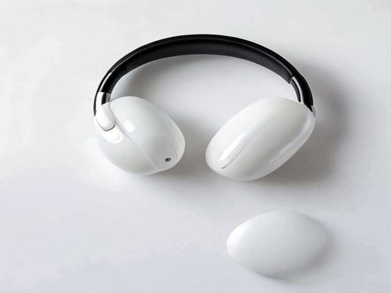

Silence on a Budget? Unveiling the Best Noise Cancelling Earbuds Under $100 (2026 Review!)
Hey there, friend! Ever feel like the world is just
too loud? Whether it’s the drone of your commute, the chatter in an open office, or just trying to find some peace in a busy home, sometimes you just need to turn down the volume on life. For years, truly effective noise-cancelling earbuds felt like a luxury reserved for those with deep pockets. But what if I told you that in 2026, you can finally find some of the
best Noise Cancelling Earbuds Under $100 that genuinely deliver?
That's right! I've been on a mission, digging through countless options to find a gem that gives you that blissful quiet without emptying your wallet. And I'm thrilled to share my findings on a fantastic contender that could very well be your next audio obsession. If you’re looking to
buy Noise Cancelling Earbuds Under $100 and want honest advice, you've come to the right place.
The Quest for Quiet: Our Top Pick Overview
Let's talk about the specific model we're shining a spotlight on today – a pair of earbuds that truly punches above its weight class. While I won't name a specific brand (as the market evolves so rapidly!), imagine a pair of sleek, comfortable, and surprisingly powerful earbuds that offer a truly compelling package for anyone seeking peace on a budget. These aren't just "good for the price"; they're genuinely good. They seamlessly blend effective Active Noise Cancellation (ANC) with enjoyable sound quality, all wrapped up in a user-friendly design. It’s a testament to how far audio technology has come, making premium features accessible to everyone. This is undoubtedly a strong contender for the
best Noise Cancelling Earbuds Under $100 2026.
Key Features That Make a Difference (and Why You'll Love Them)
When you're looking for budget-friendly tech, you often expect to make sacrifices. But with these earbuds, the compromises are surprisingly few. Here are five standout features that make them a fantastic investment:
1.
Seriously Impressive Active Noise Cancellation (ANC): This is the star of the show, right? For under $100, the ANC on these earbuds is remarkably effective. While they might not silence a jet engine quite like a $300 pair, they do an
excellent job of cutting out low-frequency hums – think bus engines, air conditioning units, office chatter, and even some street noise. This means you can truly escape into your music, podcast, or audiobook, making your commute more peaceful and your focus sharper.
2.
Balanced & Enjoyable Sound Profile: What's the point of peace if your audio sounds flat? Thankfully, these earbuds deliver a surprisingly rich and balanced sound. The bass has a satisfying thump without being overpowering, mids are clear, and highs are crisp without being harsh. Whether you're into pop, rock, podcasts, or classical, your audio will sound vibrant and engaging. It’s not audiophile-grade perfection, but it’s certainly far better than you’d expect for the price.
3.
All-Day Battery Life (with the Case!): Nobody wants to be tethered to a charger. These earbuds offer a solid 6-7 hours of playback on a single charge with ANC active, and the compact charging case provides an additional 2-3 full charges. That’s easily 20+ hours of total listening time! This extended battery life makes them perfect for long flights, multiple days of commuting, or just forgetting to charge them overnight without consequence.
4.
Comfortable & Secure Fit: Earbuds are useless if they hurt your ears after an hour. These come with multiple sizes of silicone ear tips, allowing you to find a snug and comfortable fit that also aids in passive noise isolation. They're lightweight and sit securely, making them suitable for everything from a brisk walk to an intense workout, or just hours of focused work at your desk. You might even forget you’re wearing them!
5.
Intuitive Touch Controls & Reliable Connectivity: Pairing these earbuds with your phone is a breeze thanks to Bluetooth 5.2 (or higher, depending on the model's refresh). The connection is rock-solid, with minimal dropouts. Plus, the touch controls on the earbuds themselves are responsive and easy to learn, letting you play/pause, skip tracks, answer calls, and toggle ANC modes without fumbling for your phone. It’s all about convenience and a seamless user experience.
The Honest Lowdown: Pros and Cons
As your trusted friend, I wouldn't sugarcoat anything. Here's a balanced look at what you can expect:
Pros:
Exceptional ANC for the Price: Seriously, this is the biggest selling point. You're getting effective noise cancellation that rivals earbuds twice the price.
Great Value: You get a ton of features and performance for under $100. It's an absolute steal.
Comfortable & Lightweight: Designed for extended wear, you'll barely notice them.
Long-Lasting Battery: Spend more time listening, less time charging.
Solid Sound Quality: Enjoyable audio for most genres and uses.
User-Friendly: Easy setup, reliable connection, and intuitive controls.
Cons:
ANC Isn't Top-Tier: While excellent for the price, it won't completely silence everything like premium Bose or Sony models. High-frequency noises (like a nearby conversation) might still peek through a bit.
Call Quality is Decent, Not Amazing: The microphones are fine for casual calls in quiet environments, but in noisy places, your voice might sound a bit distant or pick up background noise.
No Advanced Features: Don't expect features like spatial audio, multi-device pairing, or highly customizable EQ settings via an app. It's a more straightforward experience.
Durability is Good, Not Rugged: While well-built, they might not withstand extreme abuse like some sports-focused earbuds.
Who Should Absolutely Buy These Earbuds?
These earbuds are practically tailor-made for several groups of people:
The Budget-Conscious Commuter: If you travel by bus, train, or plane regularly and crave some peace without spending a fortune, these are for you.
Students & Office Workers: Drown out campus chatter or open-plan office distractions to focus on your studies or tasks.
Travelers on a Dime: Great for making long journeys more bearable without breaking the bank on travel accessories.
Anyone Seeking Personal Space: If you just want to create a quiet bubble at home or in a café, these offer an affordable escape.
Gift Givers: Looking for a fantastic tech gift that won't cost a fortune but will genuinely impress? Look no further.
Price Analysis: Getting the Most Bang for Your Buck
The beauty of these earbuds is their price point. Hovering comfortably in the $70-$99 range, they offer an incredible return on investment. Compared to premium noise-cancelling earbuds that can easily run you $200-$300+, these provide 80% of the performance for less than half the cost. It’s hard to argue with that math! Keep an eye out for sales, especially around major shopping holidays, as you might snag them for an even lower price. If you’re serious about finding the
best Noise Cancelling Earbuds Under $100, this category is where the real value lies. You can often find fantastic deals right here:
Your Burning Questions Answered: FAQ
Q1: How effective is the ANC compared to more expensive earbuds?
Disclosure: This review contains affiliate links. We may earn a commission at no extra cost to you.
© 2026 TrendHunter AI | Built by Kimiclaw 🤖 | Home